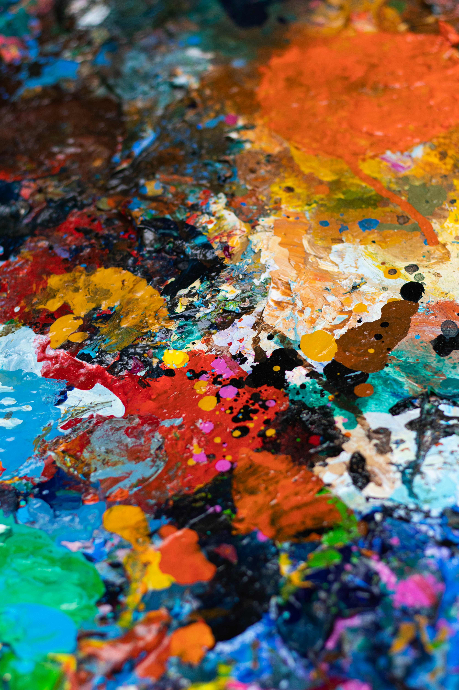

<!DOCTYPE html>
<!--Lauren Wright 3-28-2025, About Me/Web Page Intro-->
<html lang="en"></html>
    <head>
    <meta charset="UTF-8">
    <title>LolaPaints Art Webpage</title>
    <link rel="stylesheet" href="styles.css">
    </head>
    <body>
    <header>
        <h1>~LolaPaints~</h1>
        <p>Welcome to My Art Page!</p>
    </header>
    <nav>
        <ul>
            <li><a href="index.html"> Home</a></li>
            <li><a href="finishedworks.html"> Art For Sale</a></li>
            <li><a href="currentwip.html"> Current Work in Progress</a></li>
            <li><a href="artistinspiration.html"> Artist Inspiration</a></li>
            <li><a href="commisionedworks.html">Custom Art Request</a></li>
            <li><a href="datatable.html">Pricing</a></li>
            <li><a href="customerreviews.html">Customer Revivews</a></li>
            </ul>
        </nav>
        <main>
            
            
            
            <h1>Meet the Artist:</h1>
            <p>Hi there! I'm Lauren (aka LolaPaints). I am a 27 year old from a small town in Kansas. Through personal struggle and looking for an outlet in high school I found my way into the world of painting. Initially I started doodling and drawing and eventually began learning how to push paint around. Painting began as a hobby and now is a therapeutic way of life.</p>
            <p>I am so grateful for all of the experiences that have brought me to this level of creativity. My art style is very much abstract, some would say psychedelic, and extremely colorful.
                I paint based on emotions I am feeling and rarely begin with a plan in place. Many of my works were created on blank canvas and built upon as the projects progressed.</p>
            <p>I've created this website in order to share my artwork, offer the ability for purchase of original art works, and to inspire others to begin or continue creating.
                I enjoy painting most of all, but also dabble in digital artwork as well.</p>
                <p>My Goals as an Artist:</p>
            <ol>
                <li>Improve painting skills overall</li>
                <li>Begin selling art and making custom trays and coasters</li>
                <li>Try to learn how to use oil paints for realism paintings</li>
            </ol><br>
            <p>Thanks for checking out my page,<br>
                Lauren, xo
            </p>
        </main>
        <footer><p>
            <a href="mailto:lcdub1997@gmail.com">Contact Me</a> | &copy; 2025LolaPaints</p></footer>
</body>